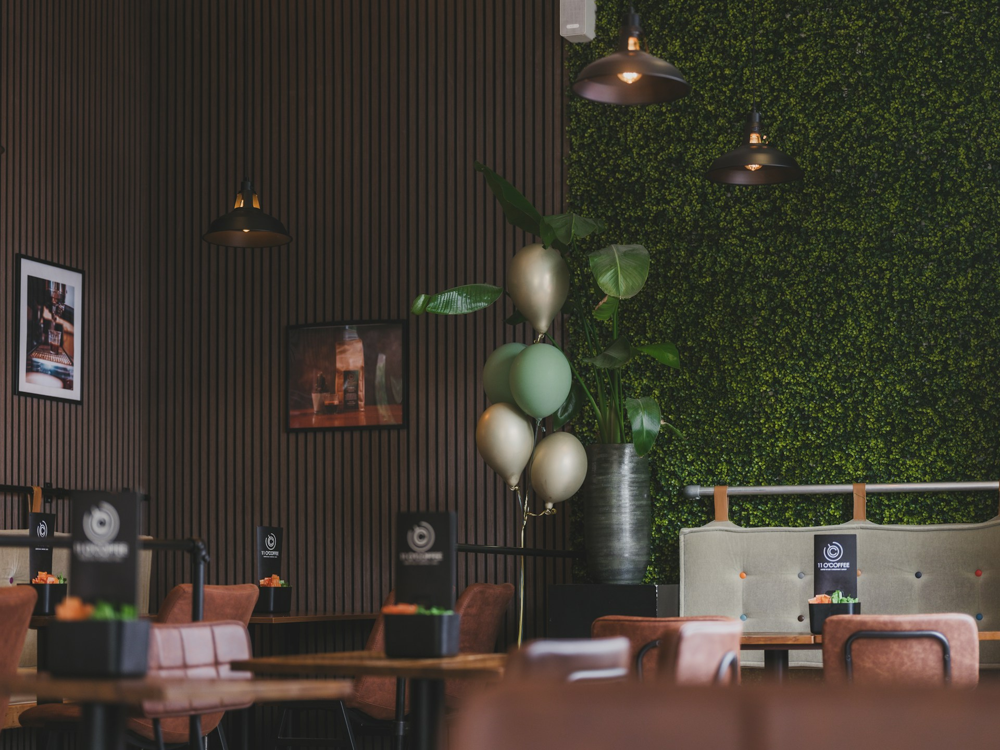

熊本の水で淹れる、
やさしい一杯。
店舗紹介

KUMAMOTO COFFEE は、熊本市の静かな街角にある小さなカフェです。
熊本は、生活に使う水のほとんどを地下水でまかなう「水の都」。長い年月をかけて大地に磨かれたやわらかい水で、一杯ずつハンドドリップでコーヒーを淹れています。
気のぬくもりを感じる店内で、ゆっくりとした時間をお過ごしください。
営業時間
| 営業時間 | 9:00~19:00 (ラストオーダー 18:30) |
|---|---|
| 定休日 | 毎週水曜日 |
| 席数 | 20席(カウンター6席・テーブル14席) |
| お支払い | 現金・クレジットカード・電子マネー |
アクセス
| 住所 | 〒860-0000 熊本県熊本市中央区架空町3-14 |
|---|---|
| 最寄り | 市電「通町筋」電停から徒歩5分 |
| 駐車場 | なし(近隣のコインパーキングをご利用ください) |
| 電話 | 096-000-0000 |
お問い合わせ
ご予約・貸切のご相談・そのほかのご質問は、下記のフォームからお気軽にお問い合わせください。
お問い合わせフォームへ